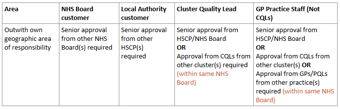

Chapter 2 LIST IG Approvals Framework
2.1 Before Starting a Project
Before starting any project, there are a number of questions we should ask ourselves. We can then consult the LIST IG Approvals Framework to determine the way forward.
Who is my primary customer/contact?
- Determining your primary customer or contact for your project will be done during your initial meeting with the customer e.g. GP cluster or practice quality lead; HSCP service manager.
Why are they asking for this data/information?
- Define clear aim(s) and objective(s) of the project in collaboration with your customer.
Where is the data coming from?
- Map desired outcomes and variables to available data sources (local and/or national).
Who owns that data?
- Identify data owner(s) and whether you need to gain permission to access that data.
How do I access the data required?
- National data: Public Health Scotland
- GP data: Cluster or Practice Quality Lead
- Local data: Please discuss this with your local contacts
- Other: Third sector or partner organisations
Am I using the minimum amount of variables/information required to do this project?
- Review variables / information required by your customer.
- Data Minimisation is a key principle of Data Protection Law, meaning personal data should only be used when necessary
Do I require patient-identifiable data?
- If you do require patient-identifiable data for your analysis, the best practice is to produce aggregate data outputs for the customer and use this to focus discussion on further details.
Who is getting access to the data once I am finished with my analysis?
- Identify who will have access to the data and what level of information / data is therefore appropriate to present in your outputs e.g. aggregated vs. person identifiable data.
- Ask yourself “Do they have a genuine need to see all of the data I intend to give them?”
- Identify who will have access to the data and what level of information / data is therefore appropriate to present in your outputs e.g. aggregated vs. person identifiable data.
Is there a way to provide this data that would not require disclosure of personally identifiable information?
- Consider ways in which you could present the data to your customer e.g. by aggregating the data by cluster, locality or GP practice.
2.2 About The Framework
The LIST IG Approvals Framework was implemented in January 2024 in order to outline who LISTs main customers are and the level of data we can provide to them. This depends on:
Who the customer is
NHS Board customer
Local Authority customer
Cluster Quality Lead (CQL)
GP Practice Staff (who are not CQLs)
The level of data required
Level 0: Published
Level 1: Aggregated Non Confidential / Publishable
Level 2: Potentially Disclosive / Management Information
Level 3: Patient Level
Non-PHS, Local data sources
Whether the data required falls into the customers own geographic area of responsibility
The framework is intended to be a useful tool for analysts to determine appropriate outputs for our customers. It can be found on the LIST SharePoint Page
2.3 Our Customers
LIST support two main workstreams: Health & Social Care Integration and Primary Care. Under the LIST IG Framework, there are four categories of customers LIST can send PHS data directly to:
NHS staff
Local Authority staff – (within a Health and Social Care Partnership)
Cluster Quality Leads (CQLs)
GP Practice Staff (who are not CQLs)
What about other customer types?
ADP/CPP customers
LIST’s “direct customer” should be either a local authority or NHS employee who is a member of the ADP / CPP. LIST are not permitted to share data direct with ADP/CPP members from organisations outwith of NHS Board / Local Authority Staff. These organisations are trusted partner organisations of PHS where we already have an approved mechanism for sharing data with, other organisations included in the ADP/CPPs may not have such mechanisms in place.
Universities
LIST do not support universities directly. LIST’s only interaction with university contacts should be via one of the 4 main customer types. For example, a HSCP may have commissioned a university to carry out analysis on their behalf. LIST only provide requested data direct to one of the 4 main customer types, never direct to the university contact. It is then for LIST’s customer to then share this data, ensuring they follow both PHS and local IG protocols as required.
Third Sector
LIST do not support third sector organisations directly. LIST support third sector organisations on behalf of the HSCP. LIST would provide data direct to HSCP contact(s), then the HSCP contact would be responsible for sharing this data with the third sector, ensuring they follow both PHS and local IG protocols as required.
What about data which isn’t held by PHS?
When we are requested to work with customers using their own local data sources, we must adhere to the local IG processes they have in place.
2.4 Comparator Data
It is common for customers to request their own data in the context of comparator data from other areas, to be able to compare their performance relative to others. Below are the key considerations for LIST to determine the data they can / can’t provide without further approvals in place.
Who is the customer and what information does their role entitle them to?
Refer to the LIST IG framework for details on the data that different customer types are entitled to with/ without approvals.
LIST can provide customers with data for their own geographic area of responsibility. We should not provide any data to a customer that means they can gain intelligence about other areas or organisations that are outwith their responsibility, unless we:
Obtain senior approval from the area
Use data available in the public domain – no approvals are required.
What data can LIST provide if no further approvals are obtained
LIST can provide data for the customer’s own geographic area of remit.
LIST cannot show/name other areas in the output, this includes LIST not being permitted to show the data with anonymised names. As these areas are outwith the customers area of remit, the customer is not entitled to this data without approvals in place.
LIST can provide some limited comparator data to allow the customer to see how their area compares to others. LIST can provide:
Highest count/rate for the area
Lowest count/rate for the area
Average count/rate
The relative position/rank of the customer’s area compared to others.
Example 1: GP Cluster requests data to compare their own cluster against other clusters in the NHS Board or HSCP

Note: LIST must ensure that there are a sufficient number of comparators that no intelligence can be gained about others.
Example 2: NHS Board containing 2 HSCPs: HSCP A and HSCP B.
A local authority customer from HSCP A requests comparative data for their HSCP’s relative position with their NHS Board. It is not possible to provide the maximum/minimum/average/ranking data as there are only 2 HSCPs in the NHS Board.
Providing this information would be providing data for HSCP B. The local authority customer is not entitled to this data, approvals are required from HSCP B.
2.5 Unpublished Data
Sometimes our customers may ask for the release of unpublished data for all HSCPs / NHS Boards in Scotland, and not just their own. The default approach will be for LIST to provide the HSCP / HB with data for their own area only.
For any comparative data, we will not provide any named HSCPs / NHS Boards outside their own area. Instead, we can provide:
The Scotland average
Their own HSCP / HB’s position when ranked against the others
- e.g. their HSCP rate is ranked X / 31 (and also provide any required caveats re how feasible it is to compare areas in this way)
What if the customer gets in touch to request that they need an output for all HSCPS / NHS Boards outside their own area?
LIST will seek permission from the PHS national team that we can release this data. LIST can only provide this output if we have expressed permission from the national team in PHS that this data can be provided.
The output will be released as Management Information. Please ensure this is clearly noted on the output using the standard text.
LIST need to inform the PHS national team of the following advice from the Statistical Governance team:
“The Statistical Governance Team have advised that from the Information Request Protocol, if this is the first time the information has been released, it should be sent for preview 48 hours before it is released to the customer as follows:
Analysis relating to a specific health board: email the PHS preview mailbox and request that the IR is sent to the Chief Executive and Communications Manager at that specific board
Analysis at national level: email the IR to your policy contact at the Scottish Government. If you are unsure of who to send it to, see the Contact Details section for a generic mailbox to use.”
2.6 Obtaining Senior Approval
While our customers are entitled to receive data within their own geographic area of responsibility, for data outwith their geographic area of responsibility senior approval from the relevant area is required.
These are the areas of responsibilities of LIST’s different customer types:
NHS Board customer - responsibility within their own NHS Board
Local Authority customer - responsibility within their own LA / HSCP
Cluster Quality Lead (CQL) - responsibility for their own GP cluster
GP Practice staff - responsibility for their own GP practice
The approvals required for the different customer types can be summarised below:

Note this relates to levels 1 and 2 of the LIST IG Approvals Framework for data not available in the public domain. No approvals are required for data available in the public domain (level 0 on the LIST IG framework)
How is the Senior Approval obtained?
Obtain written approval from the senior person within the HSCP / NHS Board via email, detailing:
The data being shared
The purpose / the specific piece of work
Who the data is being shared with
Examples
Example 1: HSCP
LIST asked to provide new aggregated analysis (not available in public domain) of PHS held data, to allow the HSCPs to compare against each other
Senior Approval Obtained: Email agreement obtained by LIST from Service Managers in both HSCPs that they were happy for LIST to go ahead with this work comparing the HSCPs with each other
Example 2: within same NHS Board
One CQL from cluster A in NHS Board asks LIST to send them all GP Cluster Profiles for the clusters in the NHS Board
Senior Approval Obtained: LIST obtained email agreement from Head of Primary Care within the NHS Board that they authorise the sharing of GP cluster profiles within the NHS Board to be shared with all clusters
Alternatively senior approval could be obtained from all CQLs, however obtaining this approval from multiple CQLs would be time consuming, in instance it would be quicker/easier to obtain the approval from one senior contact within the NHS Board
Example 3: different NHS Boards
NHS Board A and NHS Board B would like to do a new piece collaborative piece of work comparing a range of indicators using aggregated PHS health data (new analysis, data not available in the public domain)
Senior Approval Obtained: LIST obtain approval from Caldicott Guardian from NHS Board A and from NHS Board B that they agree to carry out this work
LIST colleagues would obtain the senior approval from the NHS Board they cover
Example 4: GP Clusters
CQLs from Cluster A and Cluster B (both in same NHS Board) ask LIST to create new analysis comparing both clusters for the range of indicators in the GP Cluster Profiles
Senior Approval Obtained: LIST obtain email agreement from the CQL from both clusters A and B that they are happy for LIST to do this work
Example 5: GP Practices
PQL from Practice A asks LIST to create new analysis comparing with their neighbouring practice (Practice B) for the range of indicators in the GP Practice Profiles
Both practices within the same cluster / HSCP / NHS Board
CQL is not involved in this request
Senior Approval Obtained: LIST obtain email agreement from the PQL from both practices A and B that they are happy for LIST to do this work
2.7 Collecting Data Locally
LIST are often asked to support surveys, particularly through the use of MS Forms, to collect data for further analysis. There is a Survey Guidance section of the PHS Data Protection Handbook which states that MS Forms is not approved for collecting personal data and should be avoided.
At present, the approved software is LimeSurvey and there are details in the handbook on how to get a login, and when it might be necessary to get in touch with the Data Protection team.
However, this guidance specifically relates to PHS work. In the instance where we are asked by local partners to assist with a survey using other software such as MS Forms for local data collection, and their local IG department is happy to approve its use for that particular project, then we can support this work.
We should still remain vigilant regarding the collection of personal data, even in the instance where the local partners are happy to do so. Here are our top tips for surveys:
Only collect the minimum amount of data required for the project
Avoid, wherever possible, free text fields, to eliminate the possibility of collecting unnecessary personal data
Prior to sending out the survey, check the settings to ensure the form won’t automatically collect personal data in the background, such as the e-mail address of the responder
Limit the number of people who have access to the dataset where the survey responses are collected